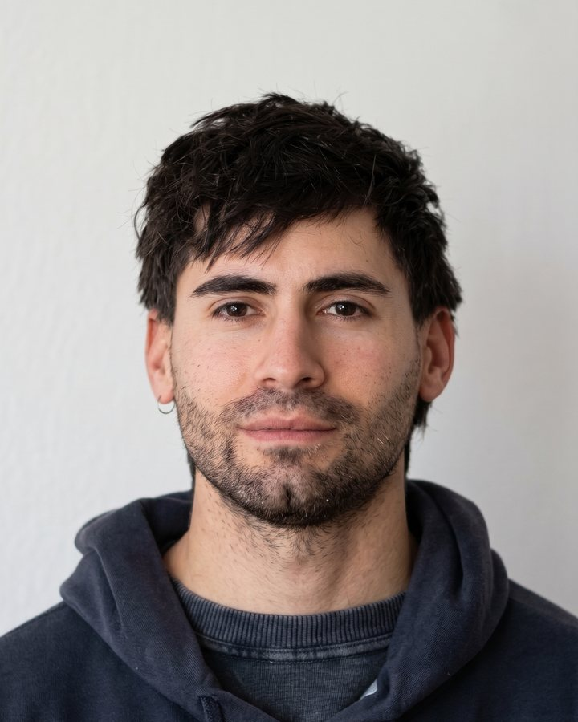
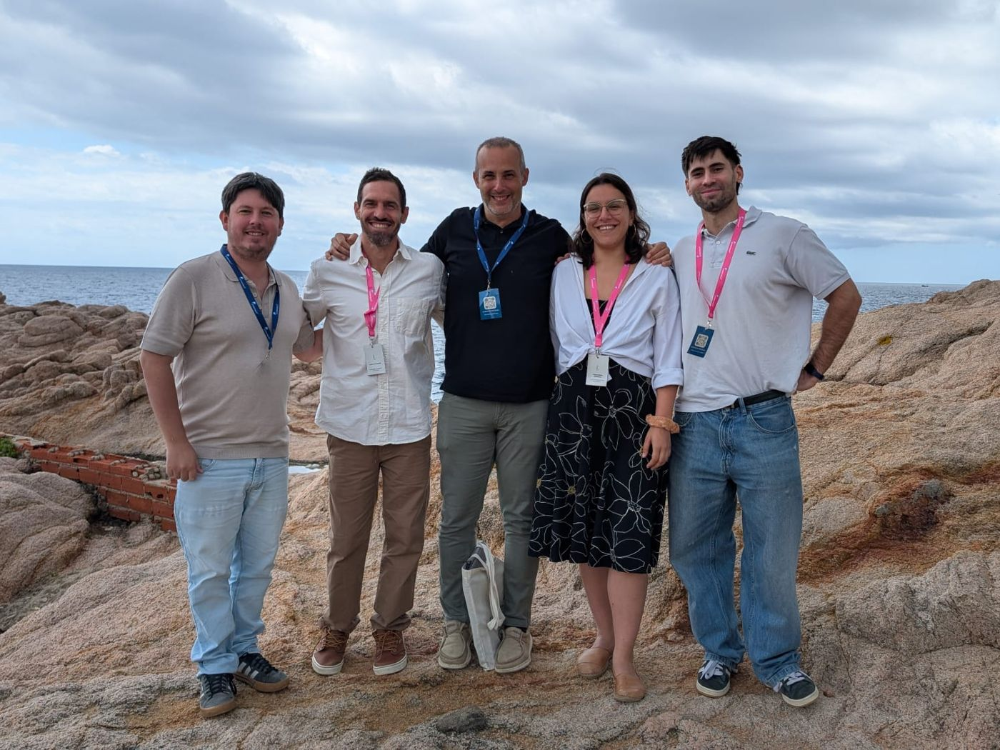
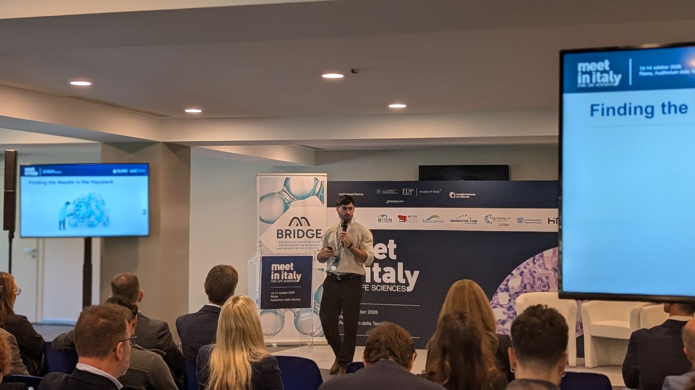
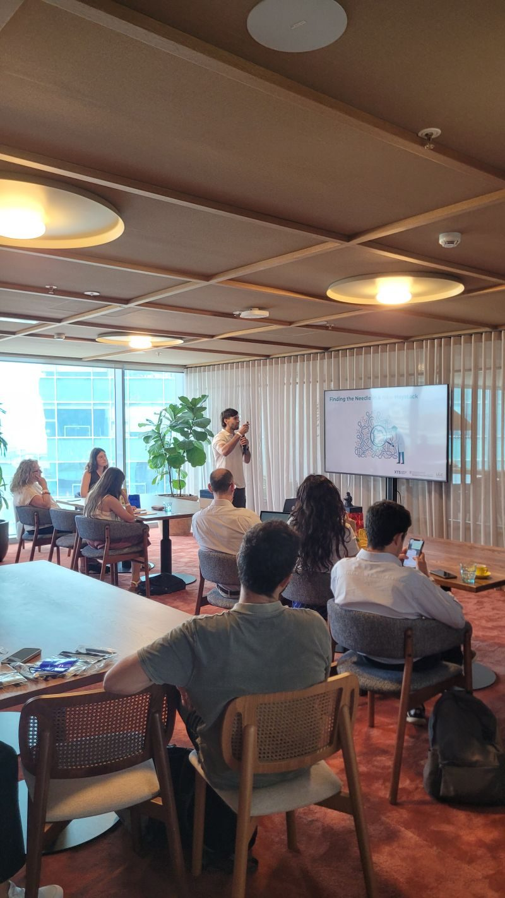
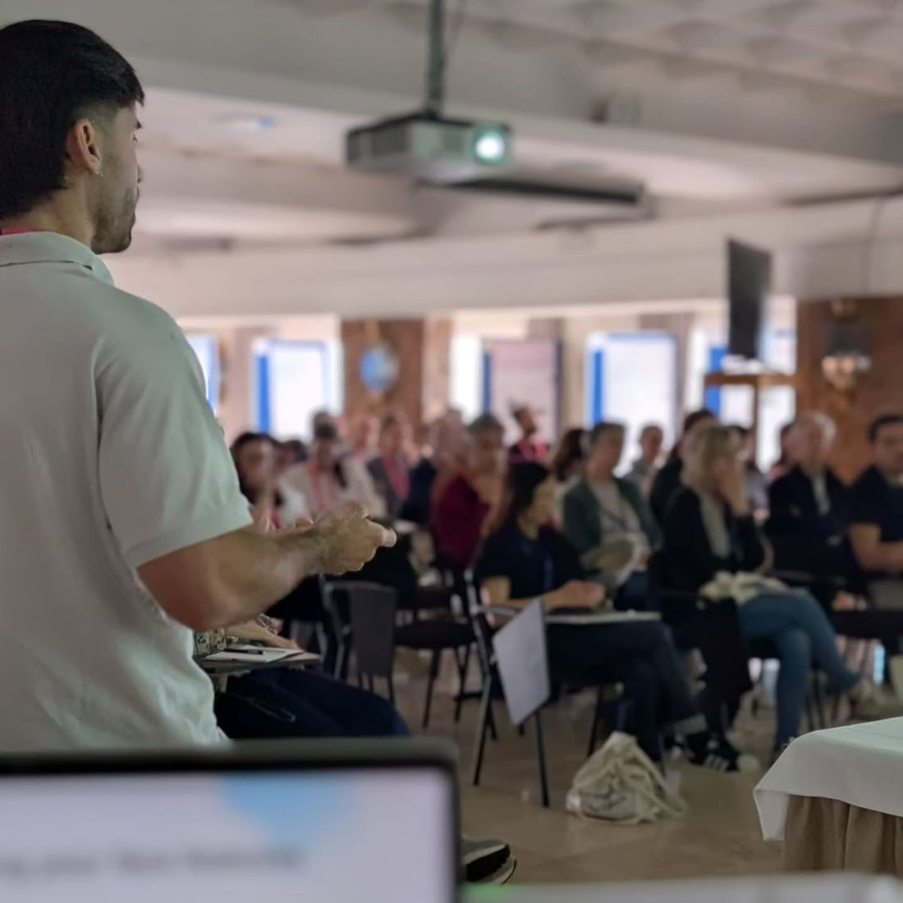

PhD thesis
Graph neural networks for RNA structure
I'm building a Graph Neural Network that learns to assess similarity between RNA secondary structures, with the goal of understanding how the structure of ncRNAs shapes their function.
PhD Student · Computational RNA Biology · Barcelona
I'm a biotechnologist turned computational biologist in the Computational RNA Biology Lab at Universitat Internacional de Catalunya. I build graph neural networks that compare RNA secondary structures, so we can find RNAs that share a shape — and maybe a function — even when their sequences look nothing alike. Lately I'm also learning how to take that research out of the lab and into a venture.

01 · Research
Many non-coding RNAs keep their function through their fold, not their sequence. My thesis asks how we can measure that structural similarity at scale.

My group
I do my PhD in the Computational RNA Biology Lab at Universitat Internacional de Catalunya (UIC Barcelona), led by Dr. Uciel Chorostecki. The group uses computational approaches to understand RNA structure and function.
PhD thesis
I'm building a Graph Neural Network that learns to assess similarity between RNA secondary structures, with the goal of understanding how the structure of ncRNAs shapes their function.
Pipeline
A Nextflow pipeline that finds similar RNAs using their secondary-structure information. It turns structures into graph embeddings and runs BLAST-style similarity search over them.
Model
The Graph Isomorphism Network at the core of the pipeline: it generates embeddings of RNA secondary structures and enables efficient similarity search, with an exact local Smith–Waterman aligner for embedding sequences.
02 · From research to venture
Searching huge RNA collections by structure is a needle-in-a-haystack problem. We're on the way to building a spin-off that uses GINflow for RNA drug discovery — and in 2026 I took the project through two venture programs, pitching it to investors, mentors and industry partners.
Innovation Program · Meet in Italy for Life Sciences 2026 · ALISEI · EU-funded
We took part in the BRIDGE Track of the Genesis4LifeSciences innovation program with GINfinity. The program included training sessions and mentoring sessions, and culminated in a pitch of the project, “Finding the Needle in the Haystack”, on stage at Meet in Italy for Life Sciences (Auditorium della Tecnica, Rome, 13–14 October 2026).

Venture Builder program · XarTEC Salut, Catalonia
We took part in the Xartec Salut Venture Builder program with GINfinity. The program included training sessions and mentoring sessions, and closed with a pitch of the project at the program's pitch day.

03 · Experience & education
Universitat Internacional de Catalunya · Computational RNA Biology Lab (PI: Dr. Uciel Chorostecki)
Graph neural networks for RNA structure similarity; developer of GINflow. Teaching in three undergraduate courses and a master's program.
Wiener lab
Development of molecular diagnostic kits in the company's R&D department.
National University of Rosario (UNR)
Practical laboratory and problem-solving classes in General Biology and Animal & Plant Biology.
IBR-CONICET · Actinomycetes Physiology and Genetics Lab
Built a CRISPRi transcriptional-interference system to study a transcriptional regulator of Mycobacterium tuberculosis, combining molecular biology and proteomics.
National University of Rosario (UNR)
Laboratory practicals for the Biology Area courses.
IBR-CONICET
Screened a chemical compound library against M. tuberculosis; molecular cloning.
Universitat Internacional de Catalunya (UIC), Barcelona
Supervised by Dr. Uciel Chorostecki.
National University of Rosario (UNR), Argentina
GPA 9.03 / 10
Parque de España School, Rosario · Scientific-Technical track
04 · Publications & talks
ChemistrySelect 8(43), e202303776 · doi:10.1002/slct.202303776

Presentation · May 2026
Presented my research at RiboRed 2026, held in Sant Feliu de Guíxols on 13–15 May 2026.
Rome · 13–14 October 2026 · Participated with GINfinity: training, mentoring and a pitch, “Finding the Needle in the Haystack”.
Barcelona · 2026 · Participated with GINfinity: training, mentoring and final pitch.
Barcelona · 15–16 October 2026.
EMBL Heidelberg.
05 · Teaching
At UIC I teach in Introduction to Bioinformatics, Clinical Genetics and Microbiology, and in the Lifelong Learning Master's Degree in Bioinformatics & AI for Healthcare. I like building small interactive tools so students can play with the ideas instead of just reading about them.
Interactive
Weights, dot products, the sigmoid and the matrix form of a layer — through one simple decision.
Interactive
Thresholds and decision boundaries with one and two features, in 3D.
Interactive
Watch an optimiser walk down a loss surface, step by step.
Clinical Genetics
Browser tools to check an HFE amplicon for the C282Y variant.
06 · Courses & certificates
07 · Contact
Open to research collaborations, conversations with people building in RNA and biotech, and anyone curious about structure-based RNA search.
Based in Barcelona, Spain.